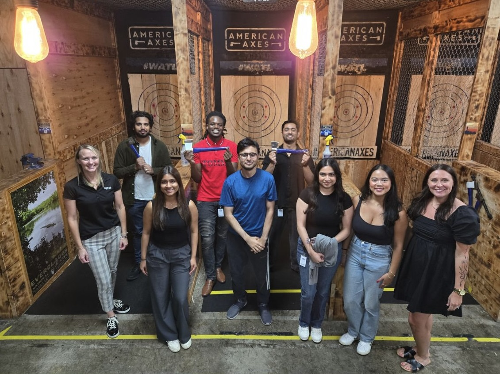

SageNet
Last summer, I had the opportunity to intern at SageNet, where I worked across both the
Network Operations Center (NOC) and Cybersecurity teams. This experience gave me hands-on
exposure to real-world security operations while also allowing me to grow in a collaborative
corporate environment. Beyond the technical skills, I built meaningful relationships and
gained insight into how different teams work together to maintain secure and reliable systems.
Cybersecurity Team
On the cybersecurity team, I worked closely with my manager and gained experience
in security operations, compliance, and incident response.
Monitored and triaged security alerts using Microsoft Sentinel SIEM, investigating potential incidents and escalating confirmed threats to senior analysts.
Managed identity and access controls in Active Directory and Azure AD, auditing permissions and reviewing anomalous sign-in activity to enforce least-privilege access.
Analyzed phishing attempts and email-based threats through Abnormal Security to help protect the Microsoft 365 environment from social engineering attacks.
Assisted in remediating findings from a PCI DSS compliance audit by addressing gaps in security controls and documentation.
Worked on ServiceNow tickets related to security operations and user access issues.
Created a ServiceNow dashboard for the Information Security team, providing a faster and more efficient way to track, prioritize, and manage tickets.
Contributed to writing IT security policies, incident response runbooks, and SOC workflows to improve consistency and streamline onboarding.
This role strengthened my understanding of how security teams detect, investigate, and respond to threats in a real-world environment.
Network Operations Center
In the NOC, I focused on improving and maintaining internal documentation systems.
I was responsible for updating and standardizing NOC documentation, including formatting,
metadata, and ensuring the correct runbooks were attached. I also migrated documentation
from a legacy knowledge base into ServiceNow.
While working on this process manually, I recognized that it was highly repetitive.
After discussing it with my manager, I took the initiative to automate the workflow.
Developed a Python script to standardize and format documentation automatically.
Eliminated the need for manual formatting, significantly improving efficiency.
Enabled bulk uploading of properly formatted documents into ServiceNow using existing import tools.
This project showed me how small process improvements and automation can save time and reduce human error in operational environments.
Mentorship
During my internship, I was fortunate to be mentored by Marcus McCormick and Fola Aldelaja,
who played a significant role in my growth. They provided guidance not only on technical
concepts but also on how to approach problems, think critically, and navigate a professional
environment. Their support gave me the confidence to take initiative, ask questions, and
explore solutions independently — especially when working on automation and security-related tasks.
👤
Marcus McCormick
Senior Manager Customer Operations · SageNet
👤
Fola Aldelaja
Information Security Analyst · SageNet
Intern Experience
One of the most rewarding parts of my internship was working alongside other interns.
We collaborated, shared experiences, and learned from each other's projects across
different departments. Outside of work, we also participated in team activities like
escape rooms, axe throwing, and bowling, which made the experience even more enjoyable.
Being surrounded by other students starting their careers created a supportive environment
where we could learn, grow, and relate to each other's journeys.
